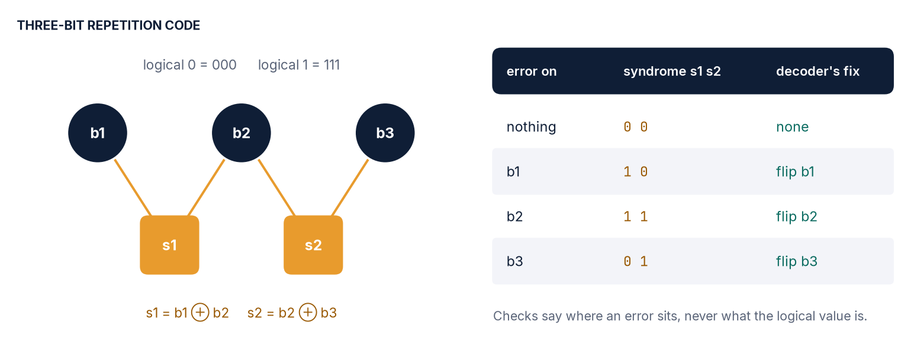
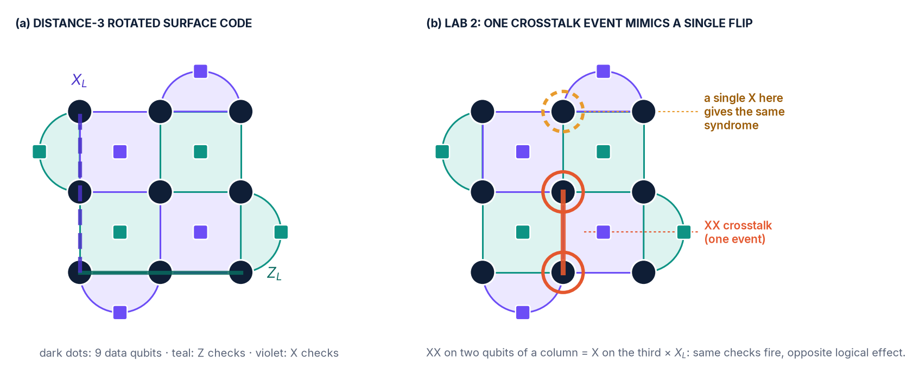
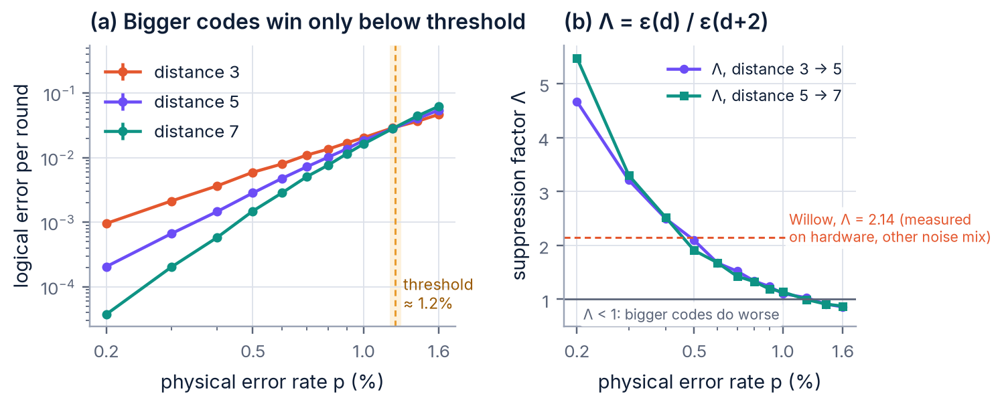

ในบทความนี้
- ตั้งเป้า — ตรวจ error โดยไม่อ่านคำตอบ
- Parity — ข้อมูลของ error ที่ไม่บอก logical bit
- ลงมือ — ตรวจทุก single flip และคำนวณ tail
- จาก bits สู่ qubits — stabilizers และ distance
- Checks มี noise — จึงต้องดูทั้ง space และ time
- อ่านกราฟ — Λ มากกว่า 1 จึงคุ้มที่จะขยาย code
- แบบฝึก — ตรวจ assumptions ก่อนเพิ่ม redundancy
- Run & check — รันตัวอย่างด้วยตัวเอง
- Sources & scope — แหล่งอ้างอิงและขอบเขต
In this post
- Goal: learn about the error without reading the answer
- Parity checks reveal location, not logical value
- Run exhaustive single-flip checks and exact failure tails
- From bits to qubits: stabilizers and code distance
- Noisy checks turn decoding into a space–time problem
- Read the threshold plot through suppression Λ
- Exercise: test assumptions before adding redundancy
- Run and check the example
- Sources and scope
ตั้งเป้า — ตรวจ error โดยไม่อ่านคำตอบ
ดาวน์โหลดหนังสือและโค้ดประกอบ
ดาวน์โหลด Below Threshold ฉบับเต็ม (PDF ภาษาอังกฤษ · 104 หน้า · 5.4 MB)
อ่านบน Google Drive · ดาวน์โหลดตัวอย่าง Python ทั้งสิบบท (ZIP)
บทที่ 3/10 · บทเรียนดัดแปลงจาก Below Threshold: AI, Quantum Errors and Better Code ฉบับ 1.0 บทที่ 3 หน้า 13–20
บทก่อนอธิบายว่าทำไม unknown quantum state copy แบบทั่วไปไม่ได้ บทนี้สร้างทางเลือก: checks → syndrome → decoder → logical result เริ่มจาก classical repetition code ที่ใช้ Python และ XOR ตรวจได้ครบทุกกรณี แล้วเชื่อมไป quantum stabilizers และ surface code
เมื่อจบบท คุณควรอ่าน syndrome เป็นข้อมูลเกี่ยวกับ error แยก physical error ออกจาก logical failure และบอกได้ว่าคำว่า “below threshold” ต้องมี code, noise model และ decoder กำกับ ไม่ต้องติดตั้ง Stim เพื่อรันตัวอย่างเล็ก ส่วน Lab 1 ฉบับเต็มอยู่ในหนังสือพร้อม simulation และผลที่บันทึกไว้
มุมมอง programmer คือ decoder เป็น function ที่มี contract ชัดเจน: input เป็น check outcomes หรือ detection events, output เป็น correction หรือ logical-class prediction แต่ contract ไม่ควรสัญญาว่าแก้ arbitrary error ได้ทุกแบบ ต้องบอกขอบเขตที่ code รองรับ
Parity — ข้อมูลของ error ที่ไม่บอก logical bit
เก็บ logical bit เป็น 000 หรือ 111 แล้วคำนวณ s₁ = b₁ XOR b₂ และ s₂ = b₂ XOR b₃ ทั้ง codewords ให้ syndrome 00 จึงยังไม่รู้ logical value หาก bit แรก flip จะได้ 10, bit กลางได้ 11 และ bit สุดท้ายได้ 01 สองบิตของ syndrome จึงชี้ตำแหน่ง single flip ได้


decoder ใช้ตารางนี้กลับ bit ที่คาดว่าผิด หากตั้งสมมติฐานว่าเกิดไม่เกินหนึ่ง flip จะกู้ codeword ถูกทุกครั้ง แต่ error 100 และ 011 ให้ syndrome เดียวกัน สมมติเราเริ่มจาก 000 แล้วเกิด error 011 decoder ที่เลือก single flip จะเปลี่ยนผลเป็น 111 ซึ่งเป็น logical failure แม้ syndrome หลัง correction จะเป็น 00
กรณีนี้สำคัญกว่าการจำตาราง: syndrome เป็นหลักฐานที่ไม่ครบทุกอย่าง decoder ต้องเลือกจาก error ที่เป็นไปได้ และ prior ที่ไม่ตรงกับ noise จริงทำให้ตัดสินใจผิดได้ การเพิ่ม AI เปลี่ยนวิธีอนุมาน แต่ไม่สร้างข้อมูลที่ checks ไม่เคยวัด
ลงมือ — ตรวจทุก single flip และคำนวณ tail
สำหรับ independent flips ที่มี probability p repetition code ระยะ 3 ล้มเหลวเมื่อเกิดสองหรือสาม flips: PL = 3p²(1 − p) + p³ ถ้าระยะ d เป็นเลขคี่ ให้รวม binomial probability ตั้งแต่ (d + 1)/2 ถึง d ตัวอย่างเว็บนี้คำนวณ exact tail ของ classical repetition code ไม่ใช่ surface-code threshold simulation
"""Classical repetition code: exact tails, parity decoding and aliasing."""
from math import comb, isclose
def syndrome(bits):
a, b, c = bits
return (a ^ b, b ^ c)
def correct(bits):
result = list(bits)
location = {(1, 0): 0, (1, 1): 1, (0, 1): 2}.get(syndrome(bits))
if location is not None:
result[location] ^= 1
return tuple(result)
def majority_failure(p, distance):
if distance < 1 or distance % 2 != 1 or not 0 <= p <= 1:
raise ValueError("Use odd positive distance and 0 <= p <= 1")
return sum(comb(distance, k) * p ** k * (1 - p) ** (distance - k)
for k in range(distance // 2 + 1, distance + 1))
for bit in (0, 1):
encoded = (bit,) * 3
for position in range(3):
noisy = list(encoded)
noisy[position] ^= 1
assert correct(noisy) == encoded
print("Single-flip syndrome map: 10 -> first; 11 -> middle; 01 -> last")
for p in (0.1, 0.5, 0.6):
row = [majority_failure(p, d) for d in (1, 3, 5, 7)]
print(f"p={p:.1f}: " + " ".join(f"d={d}: {v:.6f}" for d, v in zip((1, 3, 5, 7), row)))
assert isclose(majority_failure(0.1, 3), 0.028)
assert all(isclose(majority_failure(0.5, d), 0.5) for d in (1, 3, 5, 7))
assert syndrome((1, 0, 0)) == syndrome((0, 1, 1))
assert correct((0, 1, 1)) == (1, 1, 1)
print("Alias: errors 100 and 011 share syndrome 10; the assumed single-flip decoder fails on 011")Single-flip syndrome map: 10 -> first; 11 -> middle; 01 -> last
p=0.1: d=1: 0.100000 d=3: 0.028000 d=5: 0.008560 d=7: 0.002728
p=0.5: d=1: 0.500000 d=3: 0.500000 d=5: 0.500000 d=7: 0.500000
p=0.6: d=1: 0.600000 d=3: 0.648000 d=5: 0.682560 d=7: 0.710208
Alias: errors 100 and 011 share syndrome 10; the assumed single-flip decoder fails on 011ที่ p = 0.1 ระยะ 3 ลด failure จาก 10% เหลือ 2.8% และระยะ 7 เหลือประมาณ 0.273% แต่ที่ p = 0.6 ระยะ 7 กลับเพิ่ม failure เป็นประมาณ 71.02% เพราะเสียงข้างมากมักผิด threshold ของแบบจำลองนี้คือ 50% ซึ่งไม่ใช่ค่าประมาณ 1.2% ของ surface-code Lab
assertions ตรวจทั้ง logical 0 และ 1 ทุกตำแหน่ง single flip แล้วจงใจแสดง double-flip alias การทดสอบจึงมีทั้งกรณีที่ contract รับประกันและกรณีที่อยู่นอกขอบเขต ไม่ใช้ผลสุ่มที่โชคดีเป็นหลักฐานว่า decoder ถูก
จาก bits สู่ qubits — stabilizers และ distance
quantum stabilizer คือ Pauli product ที่คง encoded state ไว้ และ checks ทุกตัวที่วัดร่วมกันต้อง commute กัน ถ้า error anticommute กับ check ใด ผล check นั้นเปลี่ยนเครื่องหมาย ข้อมูลเครื่องหมายเหล่านี้คือ syndrome แนวคิดนี้พัฒนารายละเอียดใน Gottesman’s stabilizer formalism
สัญลักษณ์ [[n, k, d]] บอกว่าใช้ physical qubits n ตัวเก็บ logical qubits k ตัว มี minimum nontrivial logical Pauli weight เท่ากับ d จึงแก้ arbitrary errors ได้ไม่เกิน floor((d − 1)/2) ตัว ภายใต้ ideal syndrome assumptions อย่าเอาขอบเขตนี้ไปใช้กับจำนวน faulty circuit locations โดยไม่วิเคราะห์ propagation และ noisy checks


rotated surface-code patch ระยะ d ใช้ data qubits d² และ check qubits d² − 1 โดย X-type กับ Z-type checks ตรวจ phase และ bit faults ร่วมกัน ระยะ 3 จึงมี 9 + 8 = 17 qubits ภาพของหนังสือแสดงด้วยว่า correlated errors บางคู่มี syndrome เหมือนกันแต่ผลต่อ logical information ต่างกัน
Checks มี noise — จึงต้องดูทั้ง space และ time
ถ้า measurement ผิดได้ syndrome รอบเดียวไม่พอ ให้ทำ checks ซ้ำและเปรียบเทียบกับรอบก่อน detection event คือความเปลี่ยนแปลงที่ควรไม่เกิด ในภาพอย่างง่าย data fault ทำให้ detectors ใกล้กันใน space เปลี่ยน ส่วน measurement fault ให้รูปแบบสัมพันธ์กันตาม time รายละเอียด boundary ขึ้นกับ circuit
Detector error model (DEM) ระบุว่า fault mechanisms แต่ละตัว flip detectors ใด และอาจ flip logical observable ใดด้วย Stim สร้าง model และ samples สำหรับ stabilizer circuits ได้ ส่วน PyMatching ใช้ graph เพื่อประมาณการ decode นี่คือการแบ่งหน้าที่ simulator กับ inference engine ใน Lab 1
decoder ไม่จำเป็นต้องกู้ physical history ที่เกิดจริงทุกจุด เพียงเลือก correction ที่รวมกับ error จริงแล้วอยู่ใน logical class ที่ถูกต้อง การเลือกเส้นทางที่เบาที่สุดเส้นเดียวกับการรวม probability ของทุก error ใน class ไม่ใช่โจทย์เดียวกัน ความต่างนี้อธิบายว่าทำไม practical decoders จึงมี accuracy/cost trade-off
อ่านกราฟ — Λ มากกว่า 1 จึงคุ้มที่จะขยาย code


ภาพนี้คือ ผล Lab 1 ที่หนังสือรายงาน จาก rotated surface-code memories ระยะ 3, 5, 7 ภายใต้ circuit noise ที่ระบุ ไม่ใช่การรันซ้ำใหม่ของบทความ curves ตัดกันใกล้ 1.2% สำหรับ model นี้ ด้านที่ physical error ต่ำกว่า crossing การเพิ่ม distance ช่วยลด logical error ส่วนอีกด้านอาจทำให้แย่ลงเพราะเพิ่มทั้ง redundancy และ faulty components
กำหนด Λ = εd/εd+2 เมื่อ Λ > 1 logical error ลดทุกครั้งที่เพิ่ม distance สองหน่วย หนังสือรายงาน Λ ประมาณ 2 ที่ p = 0.5% แต่ค่านี้เปลี่ยนตาม noise และ finite-size effects ค่า threshold ไม่มีเลขเดียวที่ใช้กับทุก code และทุกเครื่อง
รายงาน Willow ให้ Λ = 2.14 ± 0.02 ภายใต้ hardware experiment และ neural decoder ที่ระบุ โดยผล headline ใช้ offline decoding อย่านำความใกล้เคียงกับ Lab ไปสรุปว่า noise model เหมือนกัน หรือว่า Python batch timing เท่ากับ end-to-end real-time latency
แบบฝึก — ตรวจ assumptions ก่อนเพิ่ม redundancy
เพิ่มระยะ 9 และ 11 ในตาราง exact tail ของตัวอย่าง ค่าที่ p = 0.5 ต้องยังเป็น 0.5 ทุกระยะ สำหรับ p = 0.1 failure ต้องลดเมื่อระยะเพิ่ม และสำหรับ p = 0.6 ต้องเพิ่ม อย่าใช้ numerical underflow เป็นเหตุผลอ้างว่า failure เป็นศูนย์แน่นอน
ต่อมาแจกแจง errors 8 แบบของ repetition code ระยะ 3 แล้วจัดกลุ่มด้วย syndrome คุณควรได้สอง errors ต่อ syndrome และคู่ในแต่ละกลุ่มเป็น bitwise complement กัน อธิบายว่าเหตุใด prior แบบ independent p < 0.5 จึงเลือก error ที่มีน้ำหนักต่ำกว่าได้สมเหตุสมผล
รายงานผลด้วยตารางสามแถว: สิ่งที่ exact toy model พิสูจน์, สิ่งที่ surface-code Lab สังเกต และสิ่งที่ hardware experiment รายงาน ขอบเขตที่แยกกันชัดนี้เป็นพื้นฐานก่อนถามในบท 4 ว่า learned decoder ชนะ matching เพราะอะไร
Run & check — รันตัวอย่างด้วยตัวเอง
ตัวอย่างสำหรับสอนนี้ใช้ Python standard library เท่านั้น บันทึก ch03.py แล้วรันด้วย Python 3.10 ขึ้นไป โดย assertions ตรวจ invariant ที่อธิบายในบท
python3 ch03.pyตัวอย่างทั้งสิบบทและผลลัพธ์ที่คาดหวัง (ZIP) · อ่าน source บน GitHub
Sources & scope — แหล่งอ้างอิงและขอบเขต
เอกสารและหลักฐาน
โครงบท ภาพที่ให้เครดิต และผล lab ที่รายงานมาจากหนังสือของผู้เขียน ณ November 2026 ตัวอย่างสั้นที่ใช้ standard library รันเพื่อตรวจบทเรียนเว็บวันที่ 25 November 2026 เป็นแบบจำลองเพื่อสอน ไม่ได้รันซ้ำการทดลอง Stim, neural network, mitigation หรือ LLM ฉบับเต็มในหนังสือ ข้ออ้าง hardware, simulator, preprint และบริษัทคงขอบเขตตามที่ระบุ
- Anirach Mingkhwan. Below Threshold: AI, Quantum Errors and Better Code. Edition 1.0 (November 2026), Chapter 3, pp. 13–20.
- Gottesman. Stabilizer Codes and Quantum Error Correction (1997).
- Gidney. Stim: a fast stabilizer circuit simulator (2021).
- Google Quantum AI and collaborators. Quantum error correction below the surface code threshold (online 2024; Nature 2025).
Goal: learn about the error without reading the answer
Download the book and examples
Download the complete Below Threshold book (English PDF · 104 pages · 5.4 MB)
Read on Google Drive · Download all ten Python examples (ZIP)
Chapter 3/10. A tutorial adaptation of Below Threshold: AI, Quantum Errors and Better Code, Edition 1.0, Chapter 3, pp. 13–20.
The previous lesson explains why an unknown quantum state cannot simply be copied. Now build the alternative: checks → syndrome → decoder → logical result. Start with a classical repetition code that Python and XOR can exhaustively test, then connect the mechanism to quantum stabilizers and the surface code.
By the end, you should interpret a syndrome as evidence about errors, distinguish a physical error from a logical failure, and attach a code, noise model and decoder to every threshold claim. The small example needs no Stim installation. The book contains the full Lab 1 simulation and its recorded results.
A programmer can view a decoder as a function with a contract: check outcomes or detection events enter; a correction or logical-class prediction leaves. The contract must also say which errors the code can correct. It cannot promise recovery from arbitrary damage.
Parity checks reveal location, not logical value
Encode a logical bit as 000 or 111. Compute s₁ = b₁ XOR b₂ and s₂ = b₂ XOR b₃. Both codewords give syndrome 00, so the checks do not identify the logical value. A first-bit flip gives 10, a middle-bit flip gives 11, and a last-bit flip gives 01.
The decoder uses that table to flip the suspected bit. Under an at-most-one-flip assumption, it always recovers the codeword. But errors 100 and 011 share a syndrome. Starting from 000, error 011 followed by the single-flip correction produces 111: a logical failure, despite a clean final syndrome.
The essential lesson is that a syndrome is incomplete evidence. Decoding selects among possible errors using a prior. A prior that misses the actual noise can select the wrong answer. Learning changes the inference rule; it cannot create an observation the checks never made.
Run exhaustive single-flip checks and exact failure tails
With independent flips of probability p, distance three fails on two or three flips: PL = 3p²(1 − p) + p³. For odd distance d, sum the binomial probabilities from (d + 1)/2 through d. This web example computes an exact tail for a classical repetition code; it is not a surface-code threshold simulation.
"""Classical repetition code: exact tails, parity decoding and aliasing."""
from math import comb, isclose
def syndrome(bits):
a, b, c = bits
return (a ^ b, b ^ c)
def correct(bits):
result = list(bits)
location = {(1, 0): 0, (1, 1): 1, (0, 1): 2}.get(syndrome(bits))
if location is not None:
result[location] ^= 1
return tuple(result)
def majority_failure(p, distance):
if distance < 1 or distance % 2 != 1 or not 0 <= p <= 1:
raise ValueError("Use odd positive distance and 0 <= p <= 1")
return sum(comb(distance, k) * p ** k * (1 - p) ** (distance - k)
for k in range(distance // 2 + 1, distance + 1))
for bit in (0, 1):
encoded = (bit,) * 3
for position in range(3):
noisy = list(encoded)
noisy[position] ^= 1
assert correct(noisy) == encoded
print("Single-flip syndrome map: 10 -> first; 11 -> middle; 01 -> last")
for p in (0.1, 0.5, 0.6):
row = [majority_failure(p, d) for d in (1, 3, 5, 7)]
print(f"p={p:.1f}: " + " ".join(f"d={d}: {v:.6f}" for d, v in zip((1, 3, 5, 7), row)))
assert isclose(majority_failure(0.1, 3), 0.028)
assert all(isclose(majority_failure(0.5, d), 0.5) for d in (1, 3, 5, 7))
assert syndrome((1, 0, 0)) == syndrome((0, 1, 1))
assert correct((0, 1, 1)) == (1, 1, 1)
print("Alias: errors 100 and 011 share syndrome 10; the assumed single-flip decoder fails on 011")Single-flip syndrome map: 10 -> first; 11 -> middle; 01 -> last
p=0.1: d=1: 0.100000 d=3: 0.028000 d=5: 0.008560 d=7: 0.002728
p=0.5: d=1: 0.500000 d=3: 0.500000 d=5: 0.500000 d=7: 0.500000
p=0.6: d=1: 0.600000 d=3: 0.648000 d=5: 0.682560 d=7: 0.710208
Alias: errors 100 and 011 share syndrome 10; the assumed single-flip decoder fails on 011At p = 0.1, distance three reduces failure from 10% to 2.8%; distance seven reaches about 0.273%. At p = 0.6, distance seven instead increases failure to about 71.02%, because the majority is usually wrong. This model’s 50% threshold is not the surface-code lab’s approximately 1.2% crossing.
The assertions cover both logical values and every single-flip location, then deliberately expose a double-flip alias. Verification covers the promised operating region and an explicit failure outside it. It does not rely on a fortunate random sample.
From bits to qubits: stabilizers and code distance
A quantum stabilizer is a Pauli product that leaves the encoded state unchanged; the jointly measured checks commute. An error that anticommutes with a check reverses its sign. These signs form a syndrome. The formal construction appears in Gottesman’s stabilizer treatment.
The notation [[n, k, d]] means n physical qubits encode k logical qubits with minimum nontrivial logical Pauli weight d. It corrects up to floor((d − 1)/2) arbitrary qubit errors under ideal syndrome assumptions. Do not equate that bound with the number of faulty circuit locations without analysing propagation and noisy checks.
A distance-d rotated surface-code patch uses d² data qubits and d² − 1 check qubits. Its X-type and Z-type checks jointly detect phase and bit faults. Distance three therefore uses 9 + 8 = 17 qubits. The book’s diagram also shows how correlated errors can share a syndrome but differ in their logical effect.
Noisy checks turn decoding into a space–time problem
If measurements can fail, one syndrome round is insufficient. Repeat checks and compare them across rounds. A detection event is a change where stability was expected. In a simple picture, a data fault creates nearby spatial events; a measurement fault creates a temporal pattern. Boundary details depend on the circuit.
A detector error model (DEM) lists which detectors each fault mechanism flips and whether it changes a logical observable. Stim derives models and samples for stabilizer circuits. PyMatching performs graph-based approximate decoding. Lab 1 separates simulation from inference in this way.
The decoder need not recover every detail of the actual physical history. Its correction must land in the right logical class when combined with the true error. Choosing one lightest path and summing probabilities over all errors in a class are different problems, creating an accuracy-versus-cost trade-off for practical decoders.
Read the threshold plot through suppression Λ
This is the book-reported Lab 1 result for distance-3, 5 and 7 rotated surface-code memories under its specified circuit noise. It is not a fresh article rerun. The curves cross near 1.2% in this model. Below the crossing, increasing distance helps. Above it, adding redundancy also adds faulty components and can hurt.
Define Λ = εd/εd+2. If Λ > 1, logical error falls as distance increases by two. The book reports Λ around two at p = 0.5%, but noise assumptions and finite-size effects change the value. There is no universal threshold number for all codes and devices.
The Willow paper reports Λ = 2.14 ± 0.02 under its hardware experiment, with the headline result using an offline neural decoder. Numerical proximity to the lab does not make the noise models identical. Python batch throughput likewise does not establish end-to-end real-time latency.
Exercise: test assumptions before adding redundancy
Add distances nine and eleven to the exact-tail table. At p = 0.5, failure must remain 0.5 for every distance. At p = 0.1 it must decrease with distance; at p = 0.6 it must increase. Numerical underflow is not evidence that a failure probability is exactly zero.
Then enumerate all eight distance-three error strings and group them by syndrome. Expect two errors per syndrome, with each pair related by bitwise complement. Explain why an independent-flip prior with p < 0.5 reasonably favours the lower-weight member.
Report three separate rows: what the exact toy model proves, what the surface-code lab observes, and what the hardware experiment reports. Keeping these scopes clear prepares the next question: why can a learned decoder outperform matching?
Run and check the example
This complete teaching example uses only the Python standard library. Save ch03.py, then run it with Python 3.10 or later. Its assertions check the stated invariants.
python3 ch03.pyAll ten examples and expected output (ZIP) · Browse example source on GitHub
Sources and scope
Reading and evidence
The author’s book is the source of the chapter structure, credited diagrams and reported lab results (November 2026 snapshot). The short standard-library example above was executed for this web lesson on 25 November 2026. It is a teaching model; the book’s full Stim, neural-network, mitigation and LLM experiments were not rerun for these posts. Hardware, simulator, preprint and company claims retain their stated scope.
- Anirach Mingkhwan. Below Threshold: AI, Quantum Errors and Better Code. Edition 1.0 (November 2026), Chapter 3, pp. 13–20.
- Gottesman. Stabilizer Codes and Quantum Error Correction (1997).
- Gidney. Stim: a fast stabilizer circuit simulator (2021).
- Google Quantum AI and collaborators. Quantum error correction below the surface code threshold (online 2024; Nature 2025).